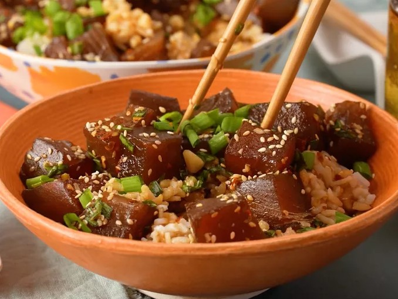

Poke

Description
Poke is a refreshing Hawaiian salad of fresh ahi tuna steak cubes tossed with soy sauce, sesame oil, and green onions. This dish is full of umami flavor, and is quite an amazing dish!
Ingredients
- Ahi Tuna
- Soy Sauce
- Sesame Oil
- Green Onions
- Toasted Sesame Seeds
- Macadamia Nuts
Steps
- Gather all ingredients.
- Place tuna in a medium non-reactive bowl.
- Add soy sauce, green onions, sesame oil, sesame seeds, macadamia nuts, and red pepper flakes; mix well
- Cover and refrigerate at least 2 hours before serving.
- Serve over rice.